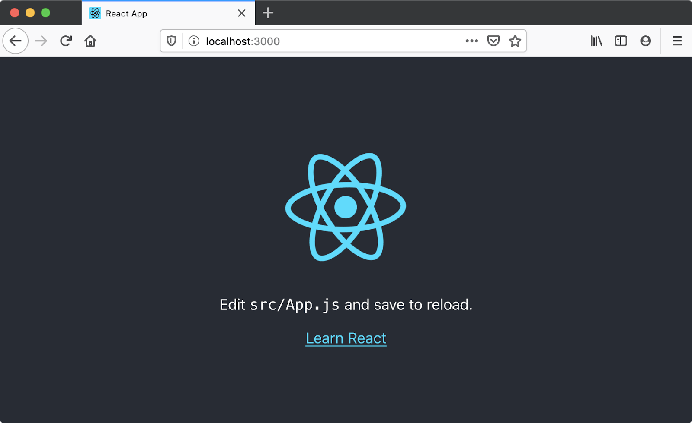

There are many ways to use React, but we're going to use the command-line interface (CLI) tool create-
react-app, as mentioned earlier, which expedites the process of developing a React application by installing
some packages and creating some files for you, handling the tooling described above.
It's possible to add React to a website without create-react-app by copying some <script> elements
into an HTML file, but the create-react-app CLI is a common starting point for React applications. Using it
will allow you to spend more time building your app, and less time fussing with setup.
Requirements
In order to use create-react-app, you need to have Node.js installed. It's recommended that you use the
long-term support (LTS) version. Node includes npm (the node
package manager), and npx (the node package runner).
You may also use the Yarn package manager as an alternative, but we'll assume you are using npm in this
set of tutorials. See Package management basics for more information on npm and yarn.
If you're using Windows, you will need to install some software to give you parity with Unix/macOS terminal
in order to use the terminal commands mentioned in this tutorial. Gitbash (which comes as part of the
git for Windows toolset) or Windows Subsystem for Linux (WSL) are both suitable. See Command
line crash course for more information on these, and on terminal commands in general.
Also bear in mind that React and ReactDOM produce apps that only work on a fairly modern set of
browsers — IE9+ by way of some polyfills. It is recommended that you use a modern browser like Firefox,
Microsoft Edge, Safari, or Chrome when working through these tutorials.
Also, see the following for more information:
Initializing your app
create-react-app takes one argument: the name you'd like to give your app. create-react-app uses this
name to make a new directory, then creates the necessary files inside it. Make sure you cd to the place
you'd like your app to live on your hard drive, then run the following in your terminal:
npx create-react-app moz-todo-react
This creates a moz-todo-react directory, and does several things inside it:
- Installs some npm packages essential to the functionality of the app.
- Writes scripts for starting and serving the application.
- Creates a structure of files and directories that define the basic app architecture.
- Initializes the directory as a git repository, if you have git installed on your computer.
Note: if you have the yarn package manager installed, create-react-app will default to using it instead of npm.
If you have both package managers installed and explicitly want to use NPM, you can add the flag
--use-npm when you run create-react-app:
npx create-react-app moz-todo-react --use-npm
create-react-app will display a number of messages in your terminal while it works; this is normal!
This might take a few minutes, so now might be a good time to go make a cup of tea.
When the process is complete, cd into the moz-todo-react directory and run the command npm start.
The scripts installed by create-react-app will start being served at a local server at localhost:3000, and open
the app in a new browser tab. Your browser will display something like this:

Application structure
create-react-app gives us everything we need to develop a React application. Its initial file structure looks like this:
moz-todo-react
├── README.md
├── node_modules
├── package.json
├── package-lock.json
├── .gitignore
├── public
│ ├── favicon.ico
│ ├── index.html
│ ├── logo192.png
│ ├── logo512.png
│ ├── manifest.json
│ └── robots.txt
└── src
├── App.css
├── App.js
├── App.test.js
├── index.css
├── index.js
├── logo.svg
├── reportWebVitals.js
└── setupTests.js
The src directory is where we'll spend most of our time, as it's where the source code for our application lives.
The public directory contains files that will be read by your browser while you're developing the
app; the most important of these is index.html. React injects your code into this file so that your browser can run
it. There's some other markup that helps create-react-app function, so take care not to edit it unless you
know what you're doing. You very much should change the text inside the <title> element in this file to
reflect the title of your application. Accurate page titles are important for accessibility!
The public directory will also be published when you build and deploy a production version of your app.
We won’t cover deployment in this tutorial, but you should be able to use a similar solution to that described
in our Deploying our app tutorial.
The package.json file contains information about our project that Node.js/npm uses to keep it organized.
This file is not unique to React applications; create-react-app merely populates it. You don't need to
understand this file at all to complete this tutorial, however, if you'd like to learn more about it, you can read
What is the file `package.json`? on NodeJS.org; we also talk about it in our Package
management basics tutorial.